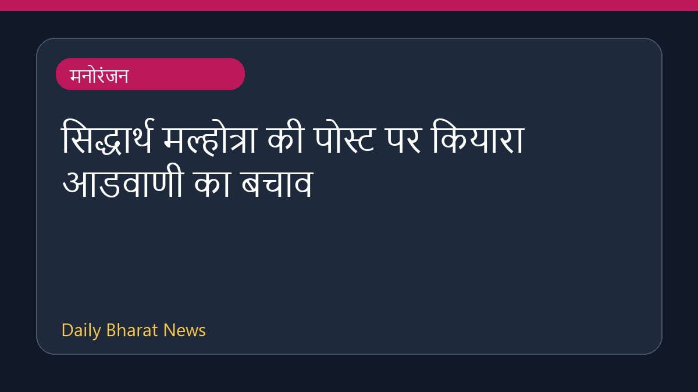

सिद्धार्थ मल्होत्रा की पोस्ट पर कियारा आडवाणी का बचाव

अभिनेता सिद्धार्थ मल्होत्रा द्वारा पत्नी कियारा आडवाणी के जन्मदिन पर साझा की गई एक प्यारी तस्वीर के बाद सोशल मीडिया पर चर्चा शुरू हो गई। सिद्धार्थ ने तस्वीर के साथ एक प्यारा नोट लिखा, जिसमें उन्होंने कियारा द्वारा उनकी आइसक्रीम चुराने का जिक्र किया। हालांकि, इस पोस्ट पर कुछ लोगों द्वारा आपत्तिजनक टिप्पणियां किए जाने के बाद इंटरनेट यूजर्स ने आगे आकर अभिनेत्री का बचाव किया। इस जोड़े की प्रेम कहानी और हालिया जन्मदिन की शुभकामनाओं से जुड़े अन्य विवरण भी सामने आए हैं, जिन्हें विभिन्न मंचों पर साझा किया गया है।